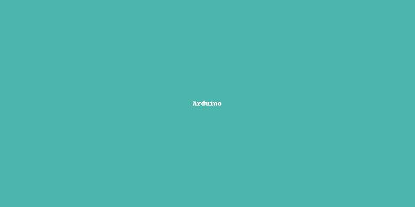

🧠 أهمية تعليم الذكاء الاصطناعي للنشء

تعليم الأطفال مفاهيم الذكاء الاصطناعي يساعدهم على فهم التكنولوجيا المحيطة بهم، ويوجههم لصناعة حلول ذكية مستقبلًا.
🤖 أهمية تعليم النشء الروبوت: نحو جيل مبدع ومستعد للمستقبل

في عصر التكنولوجيا المتسارعة، أصبحت الروبوتات جزءًا لا يتجزأ من حياتنا اليومية. تعليم النشء مبادئ الروبوت يساعد على تنمية التفكير المنطقي، الإبداع، والقدرة على حل المشكلات.
✏️ مقدمة عن BBC Micro:bit
الميكروبيت هو لوحة إلكترونية صغيرة تساعد الأطفال على تعلم البرمجة والتفاعل مع البيئة عبر الحساسات والمخرجات.
✏️ مقدمة عن Arduino
الأردوينو هو منصة مفتوحة المصدر تُستخدم لتعليم برمجة الإلكترونيات وبناء المشاريع التفاعلية باستخدام الحساسات والمحركات.